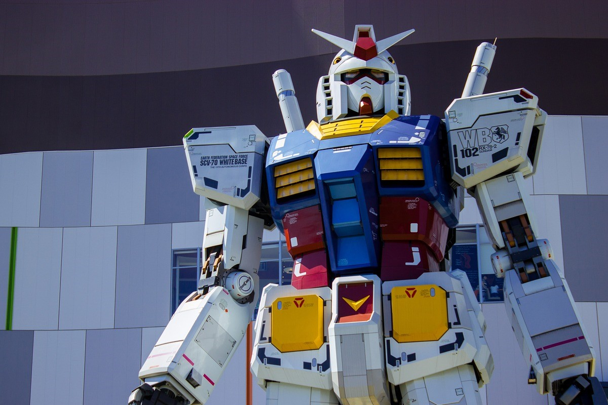

Momentos clave de la historia de Japón
Japón, una nación con una historia rica y diversa, ha experimentado una serie de períodos significativos que han dejado una profunda huella en su desarrollo como sociedad y potencia mundial. Desde los albores de la civilización hasta la era contemporánea, estos momentos cruciales han contribuido a dar forma a la identidad única de Japón y su influencia en el mundo. A continuación, exploraremos algunos de los períodos más destacados en la historia japonesa.
Período Jomon (c. 14,000 a.C. - c. 300 a.C.)
El Período Jomon marcó un hito fundamental en la historia de Japón, ya que vio el surgimiento de una sociedad más sedentaria, dejando a tras la vída nómada y establendóse en pueblos y ciudades. Durante esta época, la cerámica se convirtió en una parte esencial de la vida cotidiana, con artefactos de cerámica elaboradamente decorados que son emblemáticos de la cultura Jomon. Además, se produjo una transición gradual de una economía basada en la caza y la recolección hacia una agricultura incipiente, con la domesticación de plantas y animales, incluido el arroz, que pasaría a formar la base de la dieta japonesa, como en otras muchas culturas asiáticas. Aunque la escritura aún no existía en Japón en este momento, las impresiones de cuerda en la cerámica Jomon se consideran uno de los primeros ejemplos de expresión artística y comunicación en la historia japonesa. Este es el período que muchos historiadores denominan como el comienzo de la cultura japonesa.
Introducción del Budismo (siglo VI)
El siglo VI presenció un acontecimiento trascendental en la historia japonesa: la introducción del budismo desde China y Corea. Esta influencia cultural y religiosa transformó profundamente la sociedad japonesa, dando lugar a la construcción de templos budistas y la incorporación de escritura y literatura budistas en la cultura local. La introducción del budismo también contribuyó a la consolidación de un gobierno centralizado y al fortalecimiento del poder de la monarquía imperial. Esta época dejó una marca indeleble en la cultura y la espiritualidad japonesas.

Período Edo (1603-1868)
El Período Edo, también conocido como el período Tokugawa, fue una era de estabilidad política y paz relativa en Japón. Bajo el gobierno de los shogunes Tokugawa, se estableció una política de aislamiento llamada sakoku, que limitaba el contacto con el mundo exterior. A pesar del aislamiento internacional, Japón experimentó un florecimiento cultural y artístico, con avances en las artes, la literatura, el teatro kabuki y las artes visuales. Es a pirncipios de este periodo cuando apareció en japón la figura de los samuráis, guerreros de élite al servicios de los nobles, con un estricto código de conducta muy dependiente de su señor feudal. Esta época impuso una estricta jerarquía social y una estratificación rígida de la sociedad japonesa. A pesar de la paz relativa, este período sentó las bases para la posterior Restauración Meiji.
Restauración Meiji (1868)
La Restauración Meiji marcó un punto de inflexión crucial en la historia japonesa. Con la caída del shogunato Tokugawa, el poder fue devuelto al emperador, lo que desencadenó una rápida modernización y occidentalización de Japón. Se implementaron reformas institucionales para modernizar el gobierno, la economía y el ejército, y se fomentó la adopción de tecnologías y prácticas occidentales. La abolición del sistema de clases samurái provocó un cambio profundo en la estructura social japonesa. Japón emergió de este período de transformación como una potencia industrial y militar en el escenario internacional. No solo fortaleció su presencia en Asia, sino que también comenzó a expandir su influencia en otras partes del mundo. La modernización y occidentalización de Japón fueron tan exitosas que, en un corto período de tiempo, pasó de ser una nación feudal a una de las principales potencias mundiales.
Segunda Guerra Mundial y Posguerra (1939-1945)
La participación de Japón en la Segunda Guerra Mundial como parte del Eje dejó cicatrices profundas en la historia de la nación y en su tejido social. El país se vio inmerso en un período turbulento y traumático que cambió su curso de manera irrevocable. Los años de la Segunda Guerra Mundial vieron a Japón inmerso en un conflicto destructivo que tuvo consecuencias devastadoras. El país experimentó una serie de bombardeos aliados, incluyendo los icónicos ataques nucleares en Hiroshima y Nagasaki en agosto de 1945. Siéndo esta la primera y única vez que se utilizó armamento nuclear contra la población. Estos ataques causaron una destrucción sin precedentes y una pérdida inmensa de vidas humanas, y marcaron el inicio de un capítulo oscuro en la historia japonesa. Después de la rendición incondicional en 1945, Japón entró en un período de ocupación estadounidense liderada por el General Douglas MacArthur. Durante este tiempo, se llevaron a cabo reformas políticas, económicas y sociales profundas conocidas como las "Reformas de la Ocupación". Una de las reformas más destacadas fue la promulgación de la Constitución de Japón en 1947, que estableció un sistema parlamentario y garantizó la renuncia a la guerra como medio para resolver disputas internacionales. Esta Constitución, que todavía está en vigor hoy en día, desempeñó un papel fundamental en la transformación de Japón en una democracia moderna. Además de los cambios políticos, las reformas económicas también remodelaron la nación. Se promovió la industrialización y se fomentó la inversión extranjera, lo que ayudó a sentar las bases para el milagro económico japonés de la posguerra. Japón pasó de ser una nación devastada por la guerra a convertirse en una de las principales potencias económicas del mundo en cuestión de décadas. Un suceso similar al ocurrido en el périodo Meiji, cuando Japón paso de ser un país feudal a una potencia en pocos años. Este período de ocupación también trajo consigo una introspección profunda en la sociedad japonesa. La población reflexionó sobre las causas y las consecuencias de la guerra y comenzó a construir una nueva identidad nacional basada en la paz, la cooperación internacional y el desarrollo económico. La Segunda Guerra Mundial y el período de ocupación que le siguió fueron momentos cruciales en la historia de Japón. Aunque marcaron un tiempo de dificultades y sufrimiento, también sentaron las bases para la reconstrucción, la modernización y la redefinición de la nación japonesa en la era contemporánea.

Japón Contemporáneo (1945-Presente)
Desde la posguerra, el resurgimiento de Japón como una potencia económica y tecnológica ha sido verdaderamente asombroso. Después de los devastadores estragos de la Segunda Guerra Mundial, el país se embarcó en un impresionante proceso de reconstrucción y desarrollo que lo catapultó a la cima de la economía mundial. Una de las piedras angulares de la recuperación económica de Japón fue el Plan Dodge, implementado en 1949. Este plan, dirigido por el economista estadounidense Joseph Dodge, proporcionó un marco para la reforma económica y la reconstrucción del país. Fomentó la inversión en infraestructura, la modernización de la industria y la promoción del comercio internacional. Además, las políticas de apoyo a la educación y la capacitación laboral contribuyeron a la formación de una fuerza laboral altamente calificada que sería fundamental para el éxito económico japonés. El crecimiento económico de Japón, a menudo denominado el "milagro económico japonés", se caracterizó por tasas de crecimiento sostenidas y un enfoque en la calidad de los productos manufacturados. Empresas icónicas como Toyota, Honda y Sony se destacaron como líderes globales en sus respectivas industrias. La atención meticulosa al detalle y la búsqueda constante de la excelencia en la ingeniería y el diseño se convirtieron en sellos distintivos de los productos japoneses. Japón también se destacó en la esfera tecnológica. Durante las décadas de 1960 y 1970, el país desempeñó un papel fundamental en la revolución de la electrónica, con invenciones como el transistor y el microprocesador que revolucionaron la industria de la electrónica de consumo. Además, la popularización de la tecnología de consumo, como la televisión y la electrónica de consumo, ayudó a establecer la reputación de Japón como un líder en innovación tecnológica. La cultura pop japonesa se convirtió en un fenómeno global durante este período. El manga y el anime, géneros de cómics y animación japonesa, capturaron la imaginación de audiencias en todo el mundo. Obras maestras como "Astro Boy" de Osamu Tezuka y "Akira" de Katsuhiro Otomo se convirtieron en obras icónicas que influyeron en la cultura pop global. Los videojuegos japoneses, con empresas como Nintendo y Sega a la cabeza, también dejaron una marca duradera en la industria del entretenimiento. Hoy en día, Japón continúa siendo una nación influyente y desarrollada. Su mezcla única de tradiciones ancestrales y una vida urbana moderna es evidente en la arquitectura, la gastronomía y la cultura cotidiana. Japón sigue siendo un faro de éxito y una fuente de inspiración para el mundo entero. Su historia de resiliencia y transformación es un testimonio del espíritu humano y la capacidad de una nación para reinventarse y prosperar incluso en las circunstancias más adversas.
